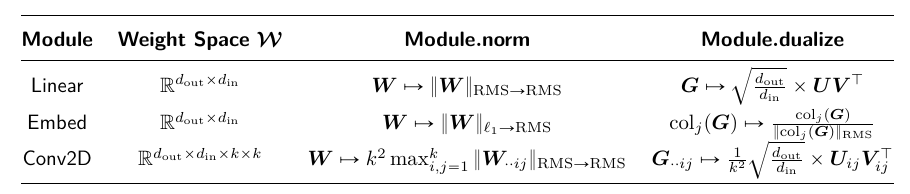

Non-Euclidean Optimization Methods for Machine Learning
Mathéo Le Dévéhat
Antonio-José Silveti-Falls · CVN
The problem: how should we update the weights?
For data \((x_i,y_i)_{i=1}^n\), a model \(f_\theta\) and a per-example loss \(\ell\):
\[\min_{\theta}\; L(\theta)=\frac1n\sum_{i=1}^{n}\ell(f_\theta(x_i),y_i) \qquad \text{(empirical risk)}\]
Gradient descent and stochastic gradient descent
The first-order local approximation of a differentiable objective is
\[L(\theta+\Delta)\approx L(\theta)+\langle\nabla L(\theta),\Delta\rangle.\]
For convex \(L\), the linearization is also a global lower bound.
Gradient descent
\[\theta_{t+1}=\theta_t-\eta\nabla L(\theta_t)\] Gradient of the full empirical risk.
SGD
\[\theta_{t+1}=\theta_t-\eta g_t\] \(g_t\) is a mini-batch gradient estimate.
Adam and AdamW: full update
Initialize \(m_0=v_0=0\). For \(t=1,2,\ldots\), compute batch gradient \(g_t\):
\[\begin{aligned} m_t&=\beta_1m_{t-1}+(1-\beta_1)g_t,\\ v_t&=\beta_2v_{t-1}+(1-\beta_2)g_t^{\odot 2},\\ \hat m_t&=m_t/(1-\beta_1^t),\qquad \hat v_t=v_t/(1-\beta_2^t). \end{aligned}\]
\[\begin{aligned} \text{Adam:}\quad \theta_{t+1}&=\theta_t-\eta_t\frac{\hat m_t}{\sqrt{\hat v_t}+\epsilon},\\ \text{AdamW:}\quad \theta_{t+1}&=(1-\eta_t\lambda)\theta_t-\eta_t\frac{\hat m_t}{\sqrt{\hat v_t}+\epsilon}. \end{aligned}\]
\(m_t\): momentum; \(v_t\): squared-gradient average; \(\epsilon\): numerical stabilizer. Operations are coordinate-wise.
Sources: Kingma & Ba, Adam; Loshchilov & Hutter, AdamW. Adam shown without L2 regularization; AdamW uses decoupled decay.
Mirror descent
Geometry. The gradient \(g_t\in V^*\) is a dual vector; a geometry maps it to the primal space \(V\) before updating parameters.
Dual coordinates. Unconstrained mirror descent updates in dual space and maps back:
\[\begin{aligned} z_t&=\nabla\psi(x_t),\\ z_{t+1}&=z_t-\eta g_t,\\ x_{t+1}&=\nabla\psi^*(z_{t+1}). \end{aligned}\]
Norm-based dualizer. For \(g\ne0\),
\[\operatorname{dualize}_{\|\cdot\|}(g)\in\arg\max_{\|u\|=1}\langle g,u\rangle.\]
This unit-direction map is distinct from \(\nabla\psi^*\).
Frank–Wolfe and the linear minimization oracle
Given a compact convex feasible set \(C\), define
\[s_t\in\operatorname{LMO}_C(g_t)=\arg\min_{s\in C}\langle g_t,s\rangle.\]
The Frank–Wolfe update is
\[x_{t+1}=(1-\gamma_t)x_t+\gamma_t s_t,\qquad 0\leq\gamma_t\leq1.\]
The LMO selects a point minimizing the linearized objective over \(C\); the update remains feasible without a projection.
Modular norms: geometry by layer
Definition · induced operator norm
Given input norm \(\|\cdot\|_\alpha\) and output norm \(\|\cdot\|_\beta\),
\[\|W\|_{\alpha\to\beta}=\sup_{\|x\|_\alpha\leq1}\|Wx\|_\beta.\]
It measures the largest output magnitude produced by an input in the unit ball.
Design idea
Choose layer norms from their input and output roles, then derive a dualizer for each module.
Source: Bernstein & Newhouse, Definition 3.
Modular norms: the paper’s layer table

Table 1 from Modular Duality in Deep Learning, showing module norms and duality maps for Linear, Embed and Conv2D
\(G=U\Sigma V^\top\) denotes a reduced SVD; the paper specifies the exact scaling and conventions.
Muon

Muon algorithm from Keller Jordan’s original post
Other parameters can use a different optimizer such as AdamW.
Source: Keller Jordan, Muon. The algorithm image requires an internet connection.
Newton–Schulz in Muon
Starting from a normalized matrix \(X_0\), the practical iteration in Jordan’s implementation is
\[A_k=X_kX_k^\top,\qquad X_{k+1}=aX_k+(bA_k+cA_k^2)X_k.\]
- Five iterations; \(a=3.4445\), \(b=-4.7750\), \(c=2.0315\).
- It produces a fast approximate orthogonalization; finite iterates need not equal the exact polar factor.
At scale: Kimi K3 and DeepSeek-V4.1-Flash use Muon variants. Mistral Large 4 used Muon in RL post-training and AdamW in pretraining.
Sources: Jordan, Kimi K3, DeepSeek-V4.1, Mistral Large 4, §§2 and 4.4.1.
Research question
What norms and updates fit modern architectures?
- New attention algorithms
- State-space models (SSMs)?
- H-Net
- JEPA
- Mixture-of-Experts (MoE)
Goals and evaluation
- Theory — derive candidate layer norms, duality maps and efficient updates; study convergence under explicit assumptions.
- Experiments — compare against SGD, AdamW and Muon with controlled tuning and compute budgets.
- Speed — aim for a competitive optimizer on the modded NanoGPT speedrun, under the applicable rules.
- Usability — develop PyTorch-compatible modules and optimizer tooling: users build models with familiar layers, while the optimizer associates supported parameters with the appropriate candidate geometry.
A three-year plan
Year 1
- Explore the literature: SOAP, Shampoo and others.
- Run small-scale experiments on already covered architectures.
Year 2
- Explore new norms for specific modules.
- Make a competitive modded NanoGPT speedrun attempt.
Year 3
- Create a PyTorch/JAX library that makes modular norms the default.
Motivation and professional ambitions
Motivation
- Understand the geometry behind deep learning, instead of treating optimizers as black boxes.
- Connect mathematics with deep learning systems.
- Develop state-of-the-art optimizers.
Professional ambitions
- Join an AI research lab or startup—or create a startup.
- Explore AI and LLMs as research tools to work faster and investigate deeper questions.